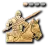

B · anatomy
Detail
Three parts. Nothing else changes about the row types you already have.
 Feudal Age~1:11
Feudal Age~1:11 1Cap. Replaces "Advance to Feudal Age". Carries the action and nothing else — the timeline above the build already states the transition span better than a text fragment can. It is the row the player clicks the landmark on, so it keeps its place in the sequence.
2Rail. 3px gold, gradient fading right, over the rows that fall inside the transition. Purely a containment signal — it adds no row.
3Boundary bar. The only full bar. Tinted, with the age asset, the age name and the arrival time. Closes the rail.
Where the transition lives
The transition belongs to the age you are leaving — "Advance to Feudal" happens in Dark Age. So the bracket sits at the tail of a section, and the boundary bar is the section's last item. An alternatives block inside a transition is therefore still inside one age section, which keeps the alternatives constraint intact.
Empty transitions
If nothing sits between advancing and arriving, the rail collapses to nothing and the cap sits directly on the boundary bar. Common on a fast castle with no intermediate steps — it should not leave an empty gold gutter.
Case 1 · alternatives in the body of a section
No conflict
The common case, and the one already designed. Gold and blue never touch: the transition has ended, the age bar closed it, and the alternatives block starts on clean ground.
 Castle Age~2:08
Castle Age~2:08~2:126–
5
–
–
–
Scout before committing
DefendKeep boomingGreedy
They opened 
before 4:00
Both paths continue
Nothing to solve here. The interesting case is below: an alternatives block inside a transition — "while the landmark is up, either wall or push" — which is a real thing authors will want.
Case 2 · v1 — nested rails
Variant
Honest but wide
Blue rail indented inside the gold one. Both contexts visible at once.
Advancing to Imperial
14:407–
–
7
–
–
Keep the landmark builders on
HoldPush out
15:407–
–
7
–
–
Stone walls on the front
Both paths continue
Imperial Age~16:40
- Reads correctly: you are advancing to Imperial, and inside that you are on the Hold path.
- Costs 14px of the description column and, worse, the nested rows no longer line up with the rows above them — which is the one thing the table format is good at.
- Depth is only ever 2, so it never gets worse than this. But it looks like it could.
Case 2 · v2 — one rail, innermost wins
Recommended
Recommended
A single rail channel at a fixed x. It is gold while the transition is the innermost context, and turns blue for the span of the alternatives, then back. No indentation.
HoldPush out
15:407–
–
7
–
–
Stone walls on the front
Both paths continue
Imperial Age~16:40
- Columns never move. Every row in the build sits on the same grid, at any nesting depth, on any screen width. On mobile that is the difference between working and not.
- The rail answers the local question. "Which of the two am I on" is the actionable one; "am I still ageing up" is already answered by the cap above and the age bar below, which bracket the whole thing.
- The gold resumes after the merge, which is what tells you the transition never ended.
- It contradicts what I said earlier about rails nesting. That was written for the mobile card list, where indenting is cheap. In the desktop table it is not, and consistency across the two is worth more than the extra signal.
- Cost: a reader glancing at one row mid-block sees blue only. Accepted, not mitigated — an age-up phase is a handful of rows, so the gold cap and the age bar are both on screen anyway. No sticky headers.
Case 2 · v3 — twin stripe
Variant
Too fine
Both rails, side by side in the same 8px gutter, no indent.
Advancing to Imperial
14:407–
–
7
–
–
Keep the landmark builders on
HoldPush out
15:407–
–
7
–
–
Stone walls on the front
Both paths continue
Imperial Age~16:40
- Keeps both signals and the alignment. The blue stripe is painted inside the gold rail's padding rather than added as a border, so rows sit on exactly the same grid as v2 — verified, zero shift.
- But two 3px stripes 1px apart is a hairline pattern. It reads as one thick smudged rail at mobile density, and in the light theme gold and blue at low alpha are close enough in value to merge. The signal it buys is the one v2 argues you do not need.
- Recorded so it is not proposed again.
Rules that fall out of v2
Spec
If the rail reports only the innermost context, these have to hold.
One rail channel
There is exactly one rail gutter, at a fixed x, for the whole build. Its colour is the innermost open context: gold for a transition, blue for an alternatives block, nothing for plain rows. Never two at once.
Depth is capped at two
Transition ⊃ alternatives is the only nesting that exists. Alternatives cannot nest, and an age-up cannot open inside a path — so a third rail is unreachable by construction.
Nothing sticks
No sticky caps, no sticky tabs. What makes "innermost wins" safe is that the transition is short — a handful of rows — so its cap and its closing age bar are almost always both on screen. If a build ever has a transition long enough for that to fail, that build has a bigger problem than the rail.
A block cannot straddle a boundary
An alternatives block that opens inside a transition must close inside it, before the age bar. The editor refuses to push the merge marker past the boundary, same rule that already stops it crossing an age-up.
Focus mode is unaffected
Focus mode shows one step at a time, so there is no rail. The transition contributes a cue at the advance and a cue at the arrival; the path bar behaves exactly as designed. Nesting is a list-rendering concern only.
The cap carries no times
Duration and arrival both live elsewhere already — the timeline above the build for the span, the boundary bar for the arrival. The cap is a label and a rail opener, nothing more.